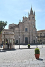
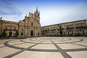
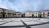

La sua particolare pavimentazione le conferisce un aspetto decisamente scenico. Il suo motivo ad anelli concentrici è stato aggiunto nel 2009 per richiamare le forme dei classici rosoni gotici,simili a quelli che si possono vedere nella cattedrale che si affaccia sulla piazza.

A completare la piazza ci sono diversi imponenti palazzi, come il duomo cittadino, la cattedrale dei Santi Pietro e Paolo, il palazzo di Città e il palazzo Modò.
Galleria foto

